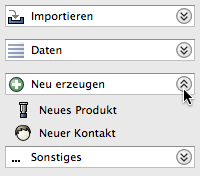

In der linken Navigationsleiste werden beim Ausklappen einer Expandbar die anderen Expandbars automatisch eingeklappt. Ist diese Option nicht ausgewählt, bleiben die anderen unbeeinflusst.
Ist diese Option angewählt werden beim Öffnen eines neuen Editorfensters automatisch alle anderen Editorfenster geschlossen. Geänderte und noch nicht gespeicherte bleiben weiterhin geöffnet.
Legt das Währungssymbol für alle Preisangaben fest. Ein Wechsel des Währungssymbols ändert nicht den Wert.
Es ist möglich, nur ein Symbol wie '€' zu verwenden, aber auch 'EUR' oder 'EURO '
Ist diese Option gesetzt, werden alle Zahlen mit Tausenderpunkt dargestellt, z. B. 1.000,00 €.